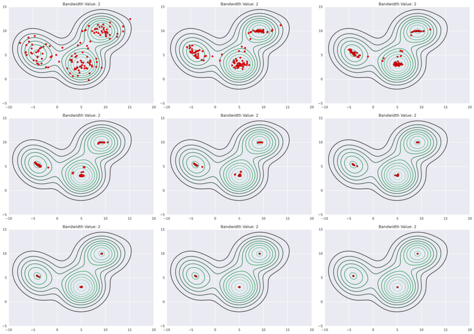
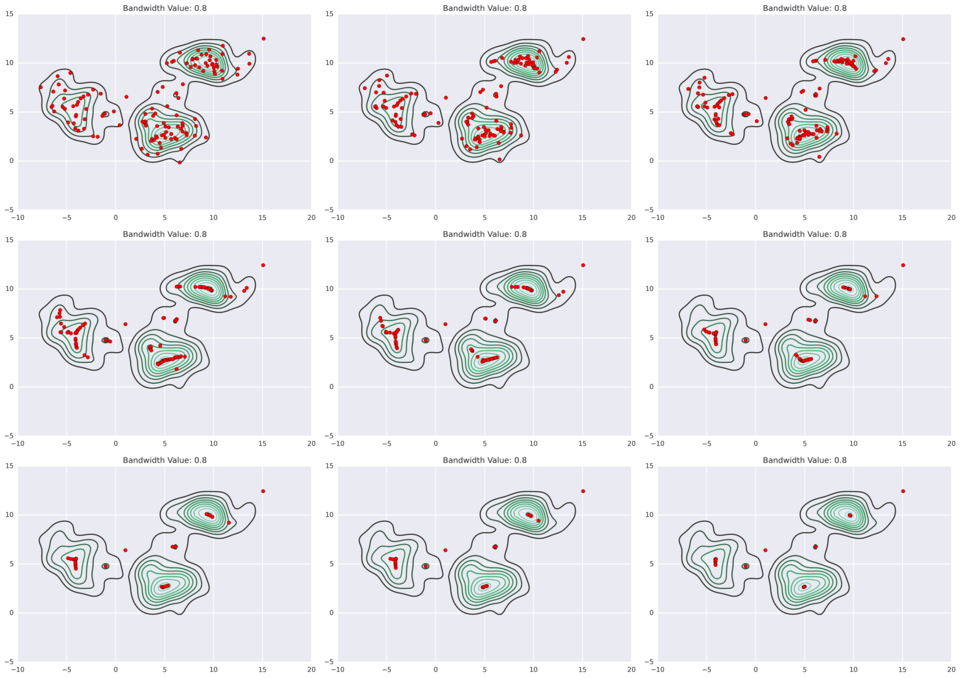

In unsupervised learning, our data does not have any labels. Unsupervised learning algorithms try to find some structure in the data.
An example is a clustering algorithm. We don't tell the algorithm in advance anything about the structure of the data; it discovers it on its own by figuring how to group them.
Some other examples are dimensionality reduction, in which you try to reduce the dimensionality of the data representation, density estimation, in which you estimate the probability distribution of the data,
A very simple nonparametric classification algorithm in which you take the
Because this is essentially predicting an input's label based on similar instances, kNN is a case-based approach. The key with case-based approaches is how you define similarity - a common way is feature dot products:
Alternatively, you can apply an optimization algorithm to choose
Some distances that you can use include Euclidean distance, Manhattan distance (also known as the city block distance or the taxicab distance), Minkowski distance (a generalization of the Manhattan and Euclidean distances), and Mahalanobis distance.
Minkowski-type distances assume that data is symmetric; that in all dimensions, distance is on the same scale. Mahalanobis distance, on the other hand, takes into account the standard deviation of each dimension.
kNN can work quite quickly when implemented with something like a k-d tree.
kNN and other case-based approaches are examples of nonparametric models. With nonparametric models, there is not a fixed set of parameters (which isn't to say that there are no parameters, though the name "nonparametric" would have you think otherwise). Rather, the complexity of the classifier increases with the data. Nonparametric models typically require a lot of data before they start to be competitive with parametric models.
First, randomly initialize
Then iterate:
Closeness is computed by some distance metric, e.g. euclidean.
More formally, there are two inputs:
Where
Randomly initialize
Repeat:
If you have an empty cluster, it is common to just eliminate it entirely.
We can notate the cluster centroid of the cluster to which example
In K-means, the optimization objective is:
This cost function is sometimes called the distortion cost function or the distortion of the K-means algorithm.
The algorithm outlined above is minimizing the cost: the first step tries to minimize
Note that we randomly initialize the centroids, so different runs of K-means could lead to (very) different clusterings.
One question is - what's the best way to initialize the initial centroids to avoid local minima of the cost function?
First of all, you should halve
Then randomly pick
Then, to better avoid local optima, just rerun K-means several times (e.g. 50-1000 times) with new initializations of points. Keep track of the resulting cost function and then pick the clustering that gave the lowest cost.
So, how do you choose a good value for
Unfortunately, there is no good way of doing this automatically. The most common way is to just choose it manually by looking at the output. If you plot out the data and look at it - even among people it is difficult to come to a consensus on how many clusters there are.
One method that some use is the Elbow method. In this approach, you vary
One drawback of K-means (which many other clustering algorithms share) is that every point has a cluster assignment, which is to say K-means has no concept of "noise".
Furthermore, K-means expects clusters to be globular, so it can't handle more exotic cluster shapes (such as moon-shaped clusters).
There are still many situations where K-means is quite useful, especially since it scales well to large datasets.
Hierarchical agglomerative clustering (HAC) is a bottom-up clustering process which is fairly simple:
This results in a hierarchy (e.g. a tree structure) describing how the data can be grouped into clusters and clusters of clusters. This structure can be visualized as a dendrogram:
Two things which must be specified for HAC are:
Unlike K-means, HAC is deterministic (since there are no randomly-initialized centroids) but it can be unstable: changing a few points or the presence of some outliers can vastly change the result. Scaling of variables/features can also affect clustering.
HAC does not assume globular clusters, although it does not have a concept of noise.
In affinity propagation, data points "vote" on their preferred "exemplar", which yields a set of exemplars as the initial cluster points. Then we just assign each point to the nearest exemplar.
Affinity Propagation is one of the few clustering algorithms which supports non-metric dissimilarities (i.e. the dissimilarities do not need to be symmetric or obey the triangle inequality).
Like K-means, affinity propagation also does not have a concept of noise and also assumes that clusters are globular. Unlike K-means, however, it is deterministic, and it does not scale very well (mostly because its support for non-metric dissimilarities precludes it from many optimizations that other algorithms can take advantage of).
With spectral clustering, datapoints are clustered by affinity - that is, by nearby points - rather than by centroids (as is with K-Means). Using affinity instead of centroids, spectral clustering can identify clusters where K-Means fails to.
In spectral clustering, an affinity matrix is produced which, for a set of
Then, from this affinity matrix, PCA is used to extract the eigenvectors with the largest eigenvalues and the data is then projected to the new space defined by PCA. The data will be more clearly separated in this new representation such that conventional clustering methods (e.g. K-Means) can be applied.
More formally: spectral clustering generates a graph of the datapoints, with edges as the distances between the points. Then the Laplacian of the graph is produced:
Given the adjacency matrix
As a reminder:
Then the eigenvectors of the Laplacian are computed to find an embedding of the graph into Euclidean space. Then some clustering algorithm (typically K-Means) is run on the data in this transformed space.
Spectral clustering enhances clustering algorithms which assume globular clusters in that its space transformation of the data causes non-globular data to be globular in the transformed space. However, the graph transformation slows things down.
Mean shift clustering extends KDE one step further: the data points iteratively hill-climb to the peak of nearest KDE surface.
As a parameter to the kernel density estimates, you need to specify a bandwidth - this will affect the KDEs and their peaks, and thus it will affect the clustering results. You do not, however, need to specify the number of clusters.
Below are some examples of different bandwidth results (source).


You also need to make the choice of what kernel to use. Two commonly used kernels are:
Mean shift is slow (
NMF is a particular matrix factorization in which each element of
Each column
NMF can be used for clustering; it has a consequence of naturally clustering the columns of
It is also useful for reducing (i.e. compressing) the dimensionality of a dataset, in particular, it reduces it into a linear combination of bases.
If you add an orthogonality constraint, i.e.
Let
This matrix factorization can be seen as a form of compression (for low rank matrices, at least) - if we were to store
Note that this kind of factorization can't be solved analytically, so it is usually approximated numerically (there are a variety of algorithms for doing so).
DBSCAN transforms the space according to density, then identifies for dense regions as clusters by using single linkage clustering. Sparse points are considered noise - not all points are forced to have cluster assignment.
DBSCAN handles non-globular clusters well, provided they have consistent density - it has some trouble with variable density clusters (they may be split up into multiple clusters).
HDBSCAN is an improvement upon DBSCAN which can handle variable density clusters, while preserving the scalability of DBSCAN. DBSCAN's epsilon parameter is replaced with a "min cluster size" parameter.
HDBSCAN uses single-linkage clustering, and a concern with single-linkage clustering is that some errant point between two clusters may accidentally act as a bridge between them, such that they are identified as a single cluster. HDBSCAN avoids this by first transforming the space in such a way that sparse points (these potentially troublesome noise points) are pushed further away.
To do this, we first define a distance called the core distance,
Then we define a new distance metric based on these core distances, called mutual reachability distance. The mutual reachability distance
For example, if
Then we can pick another point:
And another point:
Say we want to compute the mutual reachability distance between the blue
First we can compute
Which is larger than
On the other hand, the mutual reachability distance between the red and green points is equal to
We build a distance matrix out of these mutual reachability distances; this is the transformed space. We can use this distance matrix to represent a graph of the points.
We want to construct a minimum spanning tree out of this graph.
As a reminder, a spanning tree of a graph is any subgraph which contains all vertices and is a tree (a tree is a graph where vertices are connected by only one path; i.e. it is a connected graph - all vertices are connected - but there are no cycles).
The weight of a tree is the sum of its edges' weights. A minimum spanning tree is a spanning tree with the least (or equal to least) weight.
The minimum spanning tree of this graph can be constructed using Prim's algorithm.
From this spanning tree, we then want to create the cluster hierarchy. This can be accomplished by sorting edges from closest to furthest and iterating over them, creating a merged cluster for each edge.
(A note from the original post which I don't understand yet: "The only difficult part here is to identify the two clusters each edge will join together, but this is easy enough via a union-find data structure.")
Given this hierarchy, we want a set of flat clusters. DBSCAN asks you to specify the number of clusters, but HDBSCAN can independently discover them. It does require, however, that you specify a minimum cluster size.
In the produced hierarchy, it is often the case that a cluster splits into one large subcluster and a few independent points. Other times, the cluster splits into two good-sized clusters. The minimum cluster size makes explicit what a "good-sized" cluster is.
If a cluster splits into clusters which are at or above the minimum cluster size, we consider them to be separate clusters. Otherwise, we don't split the cluster (we treat the other points as having "fallen out of" the parent cluster) and just keep the parent cluster intact. However, we keep track of which points have "fallen out" and at what distance that happened. This way we know at which distance cutoffs the cluster "sheds" points. We also keep track at what distances a cluster split into its children clusters.
Using this approach, we "clean up" the hierarchy.
We use the distances at which a cluster breaks up into subclusters to measure the persistence of a cluster. Formally, we think in terms of
We define for each cluster a
Then, for each point
The stability of a cluster is simply:
Then we start with all the leaf nodes and select them as clusters. We move up the tree and sum the stabilities of each cluster's child clusters. Then:
When we reach the root node, return the selected clusters. Points not in any of the selected clusters are considered noise.
As a bonus: each
If you are dealing with more data than can fit into memory, you may have issues clustering it.
A flexible clustering algorithm (there are no restrictions about the shape of the clusters it can find) which can handle massive datasets is CURE.
CURE uses Euclidean distance and generates a set of
CURE works in two passes.
For the first pass, a random sample of points from the dataset are chosen. The more samples the better, so ideally you choose as many samples as can fit into memory. Then you apply a conventional clustering algorithm, such as hierarchical clustering, to this sample. This creates an initial set of clusters to work with.
For each of these generated clusters, we pick
For example, say
Then copy each representative point and move that copy some fixed fraction (e.g. 0.2) closer to the cluster's centroid. These copied points are called "synthetic points" (we use them so we don't actually move the datapoints themselves). These synthetic points are the representatives we end up using for each cluster.
For the second pass, we then iterate over each point